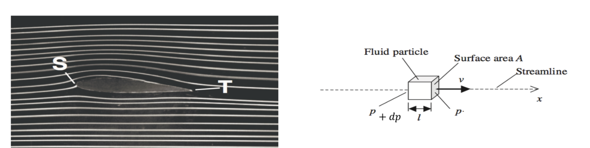
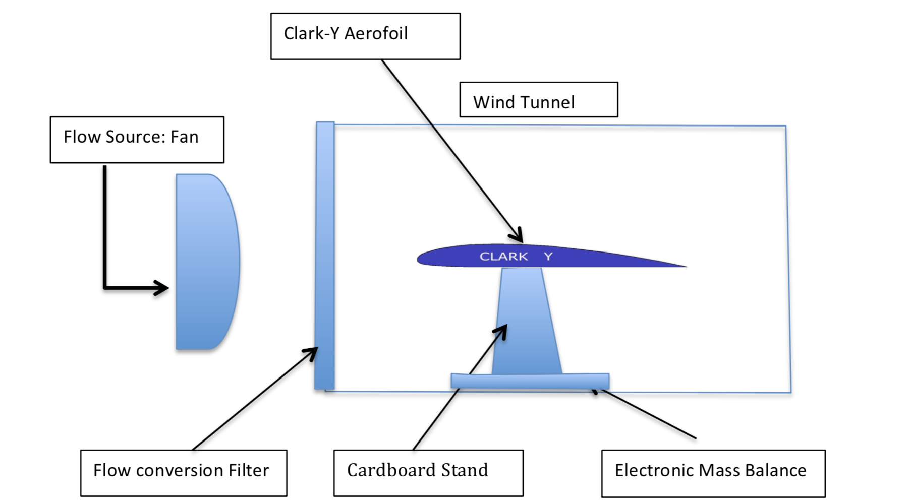
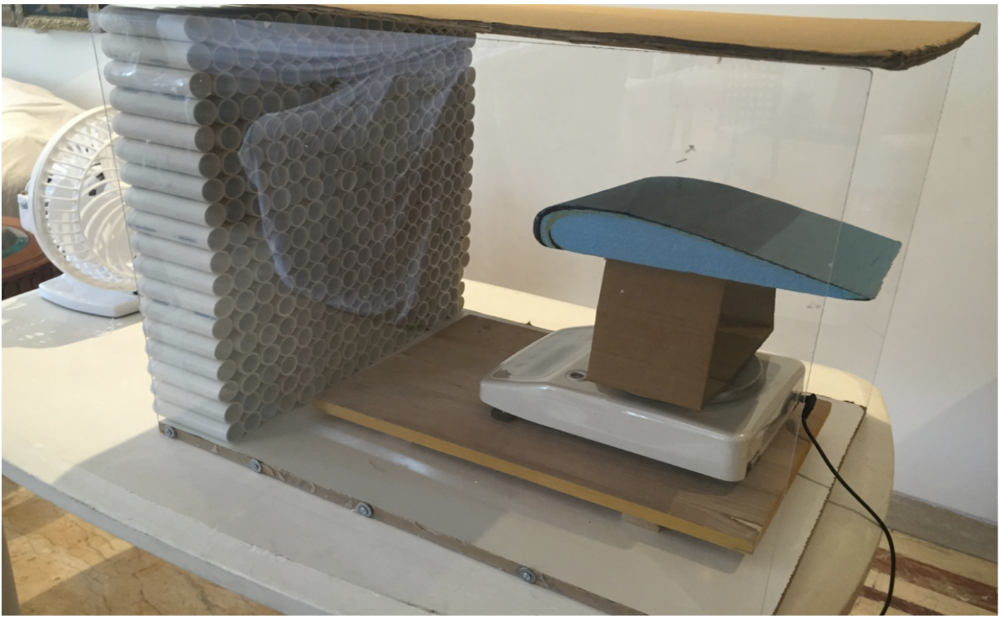

Report
Investigating the relationship between the angle of attack of an aerofoil and the lift force generated.
Lift is the component of total aerodynamic force that is perpendicular to the direction of the flow of air. This force is produced by the pressure difference on the upper and lower surfaces of a wing, which is explained through Bernoulli’s principle that relates total pressure of a fluid to the velocity of the fluid. Thus the research question of this investigation is: what is the correlation between the angle of attack of a wing or aerofoil and the lift force produced?
To determine the net lift force produced a method to convert turbulent or fluid flow into laminar flow was required. A self-made wind tunnel and aerofoil was used for this purpose in the investigation in order to create laminar flow and reduce the counter-clockwise force of the flow. An electronic mass balance was used to register a negative change in mass, which was a change in the weight of the assembly. This reading was used to determine the net upwards lift force produced on the aerofoil at a range of angles.
The lift force was obtained at a range of angles from 0° to 40° at intervals of 5°. The use of this range proved 2 separate relationships. From 0° to 20° the lift force produced shared a positive relationship as increasing the angle of attack resulted in an increase in the lift force. However, after 20° the investigation proved that the boundary layer separates from the surface of the aerofoil and wing stall occurs from 20° to 40° the lift force produced began to rapidly decline. Therefore within the limits of this experiment, this investigation proves that the critical angle of attack is approximately 20° for this particular aerofoil and a model has been derived.
If you would like to read the report, please contact me.
Flow Direction
Lift Force measurement
